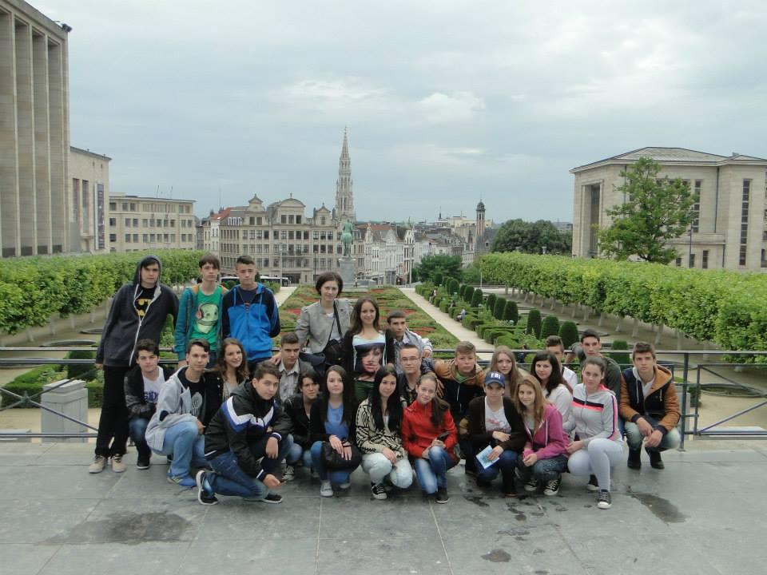
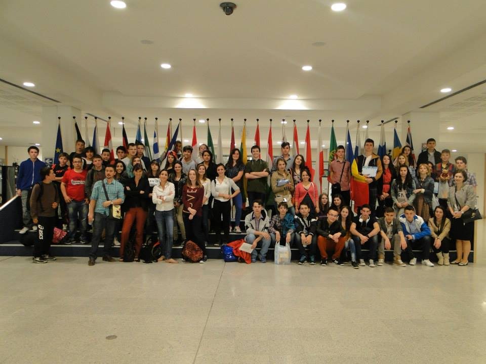

Viața școlii
Momente din activitatea noastră



Fondat în 1992, Liceul Teoretic „Dunărea” Galați oferă un mediu academic de excelență, cultivând inovația, respectul și performanța pentru viitorul fiecărui tânăr.
Liceul Teoretic „Dunărea” Galați a fost înființat în anul 1992 și face parte din categoria liceelor teoretice din județul Galați, descriind o curbă ascendentă în ceea ce privește calitatea demersului didactic și deschiderea spre multiculturalitate.
Misiunea noastră este să formăm generații de elevi prin dezvoltarea capacităților intelectuale și a competențelor-cheie, educați în spiritul valorilor europene.
Citește mai mult arrow_forward
Pregătim elevii pentru provocările viitorului printr-un curriculum adaptat și facilități moderne de studiu.
Program conceput pentru dezvoltarea gândirii analitice, algoritmice și a competențelor avansate în programare.
Detalii profil arrow_forwardExplorarea aprofundată a biologiei, chimiei și fizicii, pregătind elevii pentru cariere în domeniul medical și al cercetării.
Detalii profil arrow_forwardDezvoltarea abilităților de comunicare, spirit critic și înțelegere a fenomenelor socio-umane contemporane.
Detalii profil arrow_forwardEtapa județeană a concursului național pentru elevii din mediul rural — 9 mai 2026.
Ediția 2026 a concursului național organizat de liceul nostru.
Criteriile, calendarul și cererile pentru bursele sociale și de merit se găsesc la secțiunea Elevi.
